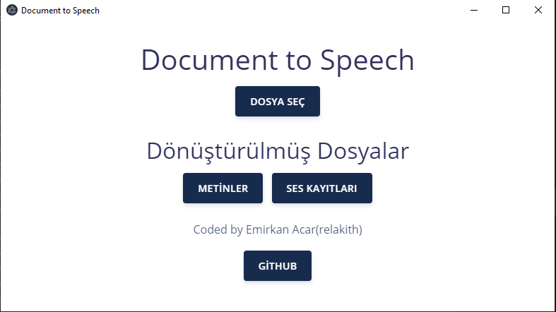

Document To Speech - Dökümantasyon
Windows Kurulumu
İlk başta kurulumu yapmadan önce bir kaç eklentiye ihtiyaç duyuyoruz.Bu eklentiden birisi Xpdf command line tools.
İndir
İndirdikten sonra 32 bit olanlar bin32 deki dosyaları
C:\Windows
C:\Windows\System32
klasörlerine kopyalayın,
64 bit olanlar bin64 deki dosyaları
C:\Windows
C:\Windows\System32
C:\Windows\SysWOW64
klasörlerine kopyalayın.
Bunları yaptıktan sonra yapıcak tek şey kalıyor o da en son sürümü edinmek.
Sürüm listesi
Burdan en son sürüme ait
DocumentToSpeech-win32-ia32.zip
adlı dosyayı indirip çıkardığınızda programa rahatlıkla erişebilirsiniz!
Desteklenen Dosya Formatları: PDF,DOCX,TXT,XLSX,PPTX
